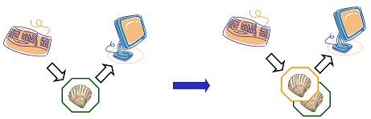

Variables
Objectives
- FIXME
The shell is just a program, and like other programs, it has variables. Those variables control its execution, and by changing their values, you can change how the shell and other programs behave.
Let's start by running the command set and looking at some of the
variables in a typical shell session:
$ set
COMPUTERNAME=TURING
HOME=/home/vlad
HOMEDRIVE=C:
HOSTNAME=TURING
HOSTTYPE=i686
NUMBER_OF_PROCESSORS=4
OS=Windows_NT
PATH=/usr/local/bin:/usr/bin:/bin:/cygdrive/c/Windows/system32:/cygdrive/c/Windows:/cygdrive/c/bin:/cygdrive/c/Python27
PWD=/home/vlad
UID=1000
USERNAME=vlad
...
As you can see, there are quite a few—in fact, four or five times more
than what's shown on this slide. And yes, using set to show things
might seem a little strange, even for Unix, but if you don't give it any
arguments, it might as well show you things you could set.
Every variable has a name. By convention, variables that are always
present are given upper-case names. All shell variables' values are
strings, even those (like UID) that look like numbers. it's up to
programs to convert these strings to other types when necessary. For
example, if a program wanted to find out how many processors the
computer had, it would convert the value of the NUMBER_OF_PROCESSORS
variable from a string to an integer.
Similarly, some variables (like PATH) store lists of values. In this
case, the convention is to use a colon ':' as a separator. If a program
wants the individual elements of such a list, it's the program's
responsibility to split the variable's string value into pieces.
Let's have a closer look at that PATH variable. Its value defines the
shell's search path, i.e., the directories
that the shell looks in for runnable programs. If you recall, when we
type a command like ./analyze that has a specific directory in the
path, the shell runs the program that path specifies. Similarly, if we
type /bin/analyze, the shell runs that specific program: we've
provided a specific path, so it knows what to do. But which one should
the shell do if we just type analyze?
The rule is simple: the shell checks each directory in the PATH
variable in turn, looking for a program with the requested name in that
directory. As soon as it finds a match, it stops searching and runs the
program.
To show how this works, here are the components of PATH broken out one
per line:
/usr/local/bin
/usr/bin
/bin
/cygdrive/c/Windows/system32
/cygdrive/c/Windows
/cygdrive/c/bin
/cygdrive/c/Python27
On our computer, there are actually three programs called analyze in
three different directories: /bin/analyze, /usr/local/bin/analyze,
and /users/vlad/analyze. Since the shell searches the directories in
order, it finds the one in /bin, not either of the others. Notice that
it will never find the program /users/vlad/analyze, since the
directory /users/vlad isn't in our path.
Before we explore variables any further, let's introduce one more
command: echo. All it does is print out its arguments. This doesn't
sound very exciting, but we can use it to show variables' values. First,
let's make sure it works:
$ echo hello transylvania!
hello transylvania!
Now let's try to show the value of the variable HOME:
$ echo HOME
HOME
That just prints "HOME", which isn't what we wanted. Let's try this
instead: echo $HOME:
$ echo $HOME
/home/vlad
The dollar sign tells the shell to replace the variable's name with its
value. This works just like wildcards: the shell does the replacement
before running the program we've asked for. Thanks to this expansion,
what we actually run is echo /home/vlad, which displays the right
thing.
Creating a variable is easy: just assign a value to a name using "=":
$ SECRET_IDENTITY=Dracula
$ echo $SECRET_IDENTITY
Dracula
To change the value, just assign a new one:
$ SECRET_IDENTITY=Camilla
$ echo $SECRET_IDENTITY
Camilla
Now for the complicated bit. Assignment only changes a variable's value in the current shell, not in any other shells that are currently running, or in any shells that are started later. To see what this means, let's go back and set our secret identity once again:
$ SECRET_IDENTITY=Dracula
$ echo $SECRET_IDENTITY
Dracula
Once it's set, let's run a fresh copy of the shell by typing the command
bash. Remember, the shell is just another program: asking it to run a
fresh instance of itself in a new process is no different from asking it
to run ls, ps, or anything else.
$ bash
Nothing seems to have happened, but we now have two copies of the shell running. We don't see anything signalling this on the screen because the new shell prints the same prompt as the old one, but our keyboard input and screen output are now tied to the child shell.

If we echo $SECRET_IDENTITY in the child shell, nothing is printed,
because the variable doesn't have a value in the child shell: it was
only set in the original shell. But if we exit the child shell and
return to the original, we can see that yes, the variable does exist.
Here's the whole sequence of commands with the ones executed in the
child shell highlighted:
$ SECRET_IDENTITY=Dracula
$ echo $SECRET_IDENTITY
Dracula
$ bash
$ echo $SECRET_IDENTITY
$ exit
$ echo $SECRET_IDENTITY
Dracula
If we really want the shell to pass a variable to the processes it
creates, we must use the export command. Let's try the secret identity
example again. After giving SECRET_IDENTITY a value, we give the shell
the command export SECRET_IDENTITY:
$ SECRET_IDENTITY=Dracula
$ export SECRET_IDENTITY
Note that it's not export $SECRET_IDENTITY with a dollar sign: if we
typed that, the shell would expand SECRET_IDENTITY, and our export
command would actually be export Dracula, which would do nothing,
because there's no variable called Dracula.
Now let's run a new shell, and type echo $SECRET_IDENTITY. There's our
variable. And of course, exiting brings us back to our original shell.
$ bash
$ echo $SECRET_IDENTITY
Dracula
$ exit
If we want to set some variables' values automatically every time we run
a shell, we can put the command to do this in a file called .bashrc in
our home directory. (The '.' character at the front prevents ls from
listing this file unless we specifically ask it to using -a: we
normally don't want to worry about it. The "rc" at the end is an
abbreviation for "run control", which meant something really important
decades ago, and is now just a convention everyone follows without
understanding why.) For example, here are two lines in Vlad's .bashrc
file, which is in /home/vlad/.bashrc:
export SECRET_IDENTITY=Dracula
export TEMP_DIR=/tmp
export BACKUP_DIR=$TEMP_DIR/backup
These two lines create the variables SECRET_IDENTITY and BACKUP_DIR,
give them values, and export them so that any programs the shell runs
can see them as well. Notice that BACKUP_DIR's definition relies on
the value of TEMP_DIR, so that if we change where we put temporary
files, our backups will be relocated automatically.
While we're here, it's also common to use the alias command to create
shortcuts for things we frequently type. For example, we can define the
alias backup to run /bin/zback with a specific set of arguments:
alias backup=/bin/zback -v --nostir -R 20000 $HOME $BACKUP_DIR
As you can see, aliases can save us a lot of typing, and hence a lot of typing mistakes.
Key Points
- FIXME